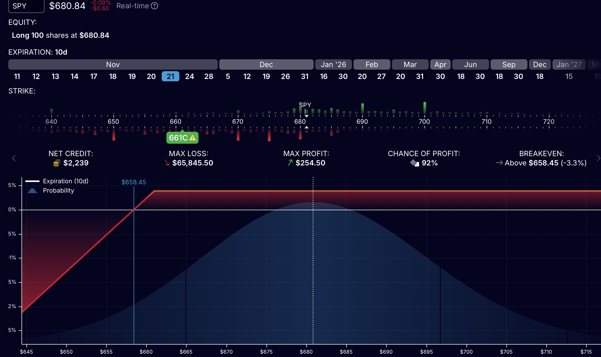

Understanding Covered Call Option Strategies
Posted on November 10th, 2025
Covered calls offer investors a strategic way to generate income and reduce the effective cost basis of an investment, particularly in neutral or slightly bullish markets. While this strategy can enhance returns by collecting premiums, it limits potential upside gains if the stock price exceeds the strike price.
Example: buying 100 shares of SPY and selling one in-the-money call option creates a covered call position.
Covered Call Strategy — Simple Overview
A Covered Call is a conservative options strategy used to generate extra income from stocks you already own. Let’s say you hold 100 shares of XZY, bought at $100 each. The stock now trades at $110, but you’re willing to sell at $115. You sell one Call option (strike $115) for $1 premium — earning $100 immediately. If the stock rises above $115, the buyer exercises the option. You sell your shares at $115, locking in a 15% gain, plus the 1% premium — total 16% profit. If the stock stays below $115, the option expires worthless. You keep both your shares and the $100 premium, which can be repeated every week or month. The main advantage: you earn income while holding a stock you already like. The main trade-off: if the stock rallies strongly above $115, your profit is capped — but at a level you’ve already chosen. In essence, the Covered Call allows investors to generate steady returns with limited downside and predefined upside — a disciplined way to make capital work efficiently.